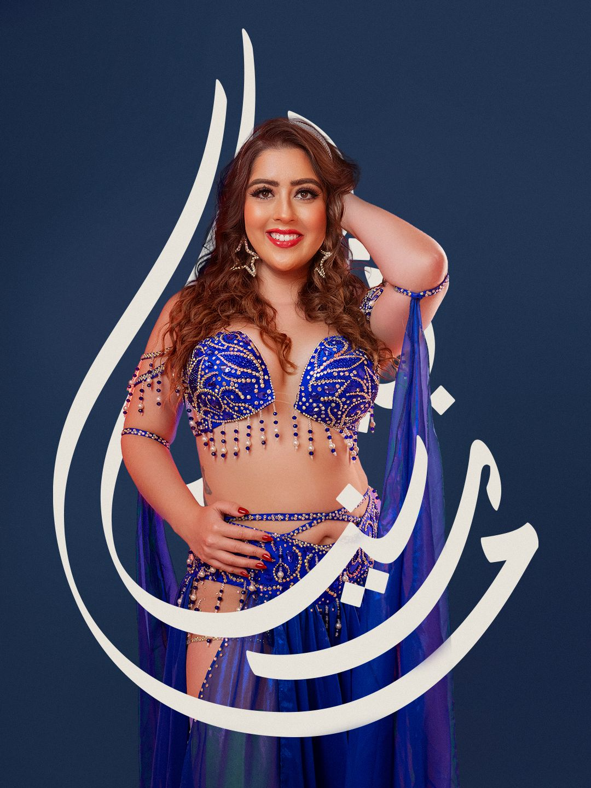

Bailarina, professora, coreógrafa e pesquisadora de Dança Oriental, Folclore Árabe e Cultura Egípcia
Bailarina, professora, coreógrafa, pesquisadora, curadora e produtora cultural, com trajetória dedicada à preservação e difusão da Dança Oriental e de suas vertentes folclóricas.
Bailarina há 20 anos e especialista em Dança Oriental Egípcia, desenvolve um trabalho que articula prática corporal, pesquisa, música e contexto cultural, buscando uma abordagem responsável e contextualizada da Dança Oriental no Brasil.
Ao longo de sua trajetória, mantém formação continuada com professores nativos do Egito, Líbano e Iraque, aliando o estudo técnico da dança à investigação de seus diferentes contextos culturais.
Em 2023, realizou uma primeira imersão de estudos no Egito, onde permaneceu por um mês, vivenciando aulas, apresentações com banda ao vivo, música e diferentes ambientes da dança egípcia.
Em 2026, retornou ao Egito para uma nova imersão de dois meses, aprofundando seus estudos em dança, música e cultura egípcia por meio de aulas, trabalho, vivências, pesquisas e contato direto com artistas e mestres locais.
Sua atuação como pesquisadora e educadora busca ampliar a compreensão da Dança Oriental para além dos estereótipos, apresentando suas diferentes manifestações, musicalidades e contextos sociais.

Aulas em grupo ou individuais para você aprender a dançar
Aulas particulares em tempo real para você aprender no conforto da sua casa sobre o tema que desejar
Oficinas práticas ou teóricas focadas em um tema específico com curta duração e abordagem intensiva
Formação completa para futuras bailarinas e professoras de danças árabes.
Encante seu evento com apresentações exclusivas de danças árabes, feitas sob medida especialmente para você.
Criação personalizada de coreografias de dança oriental ou folclore árabe para shows, espetáculos e festivais.
Preparação para solistas voltada a bailarinas que buscam profissionalização nas danças árabes
Ensaios de trabalhos coreográficos que respeitam as raízes e autenticidade de cada folclore árabe.